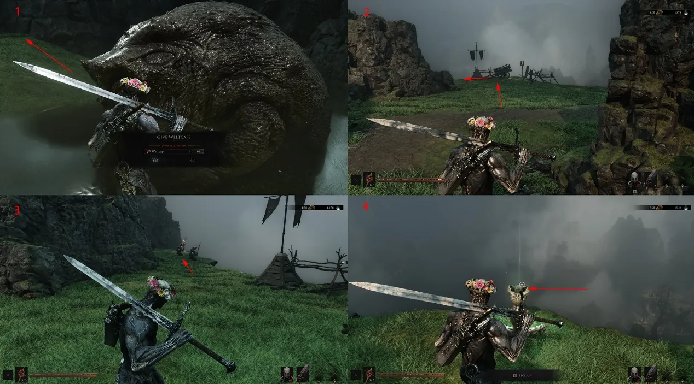
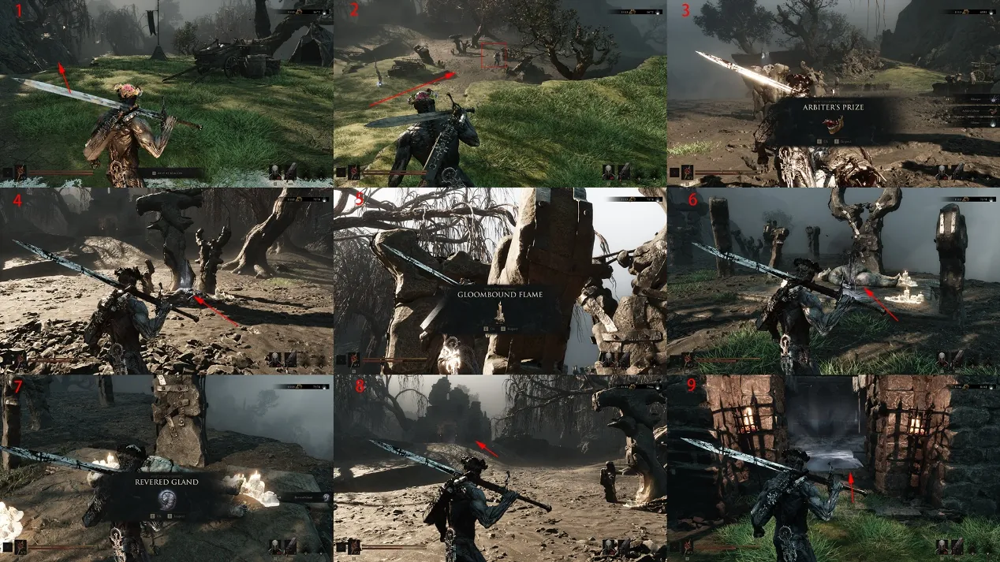
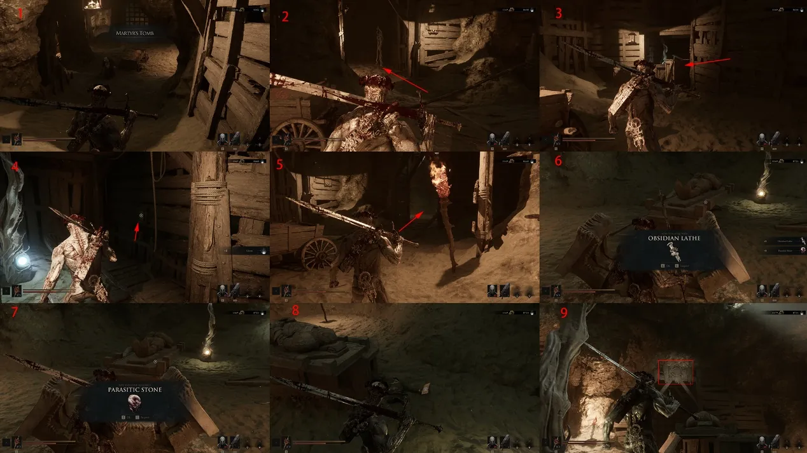
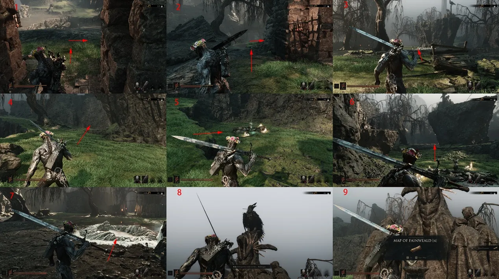
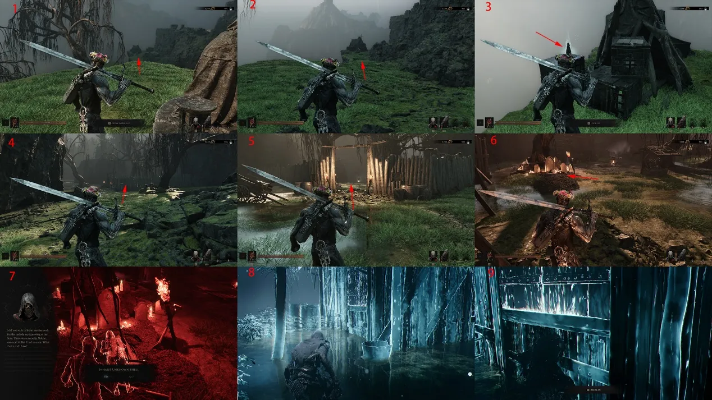
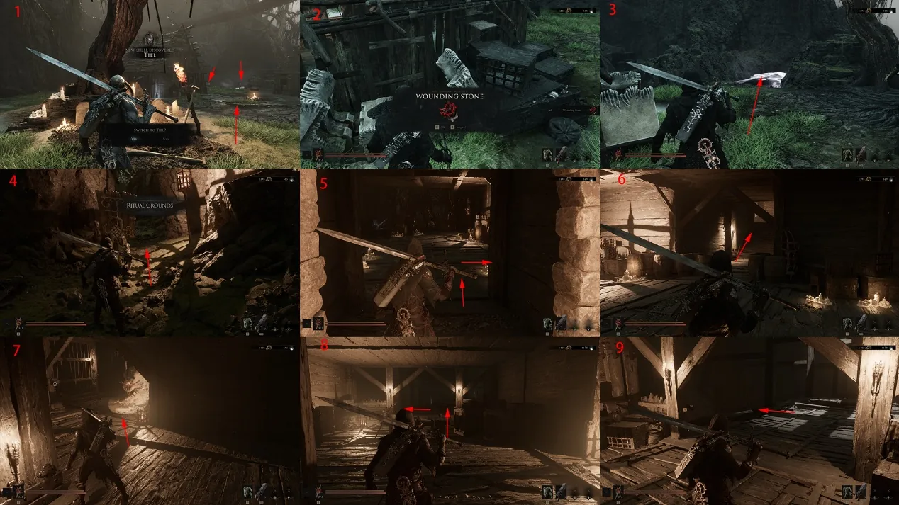
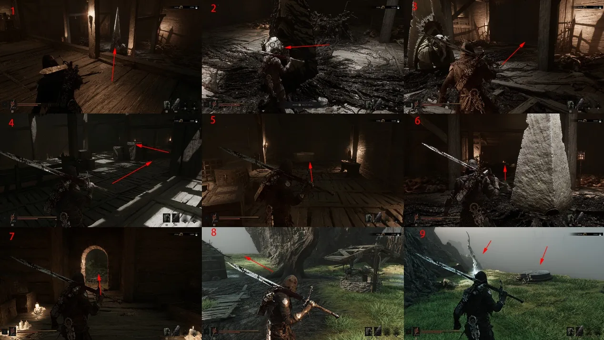
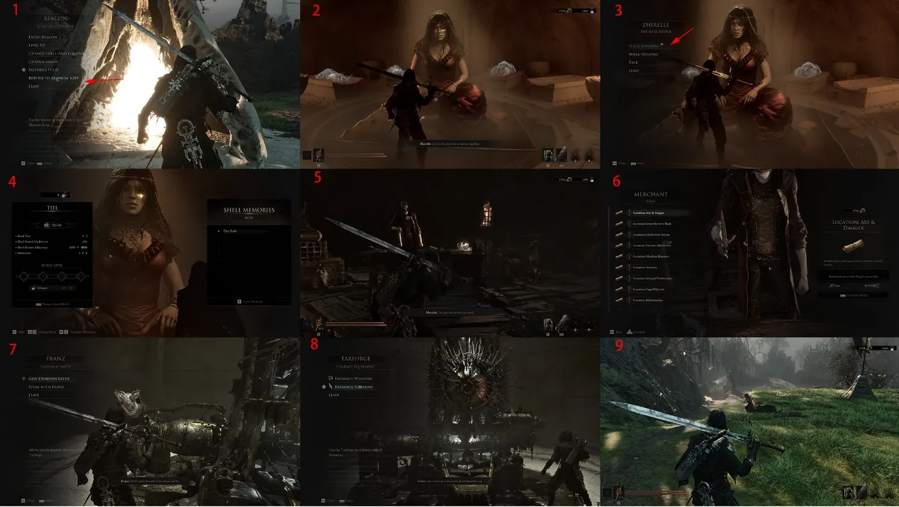

A full route through the Widow's Overlook Beacon, its side dungeon and the path that unlocks the Tiel Shell.
Start
Widow's Overlook Beacon
Key unlock
Tiel Shell
Return
Marrow Keep
Route 01Select Widow's Overlook at the regional device and follow the arrival route to the Beacon.

Route 02Enter the Beacon and collect a Glimpse. Spend Glimpses with Shellsmith Zhirelle in Marrow Keep to deepen Shell bonds, then climb the stairs to open the trial challenge.

Route 03Enter the marked cave and speak with the Devouring Frog. A mushroom lies beneath the large tree to the right of the Beacon and can be handed in here. Clear the cliff enemies outside for a Heartstone.

Route 04Restore at the Beacon, then use the lower path for the Flesh Arbiter. Collect the Arbiter's Treasure, Titan's Gland, Ectoplasmic Flame and a Charred Effigy before entering Martyr's Tomb.

Route 05In Martyr's Tomb, break the left crates and activate the door device. Clear the room, read the note and open the Treasure for the Obsidian Lathe and Parasite Stone. Shoot the door button with a ranged weapon to leave.

Route 06Outside, take the left path then turn right for a Redstone. Continue downhill for a Heartstone, use the device to reach the upper platform, speak to Rook and collect the Joyful Plains Map beneath the statue.

Route 07 · Tiel Shell acquisitionDrop from the marked platform, clear the camp and take the torch-lit enclosure. Choose Yes when prompted to control the unknown Shell, then complete the memory to gain the Tiel Shell. Open the standalone Tiel location guide.

Route 08Pick up Common Moonshine left of the house. The right side contains a Treasure, the Killing Stone and the entrance to the Ritual Ground. Cut open the door and clear the first room.

Route 09Climb the right stairs, drop from the marked second-floor edge and finish the trial for another Glimpse. The upper Treasure contains 500 Tar. Return to Marrow Keep afterwards: give Franz the Obsidian Lathe to expand the Tarforge and unlock sidearm upgrades.